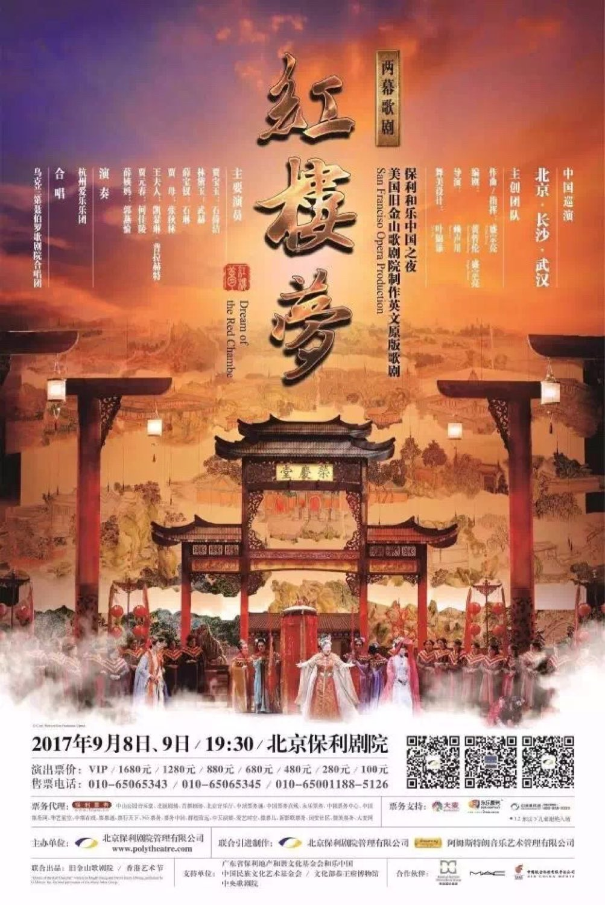
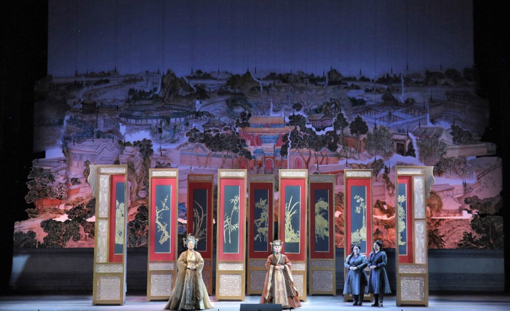
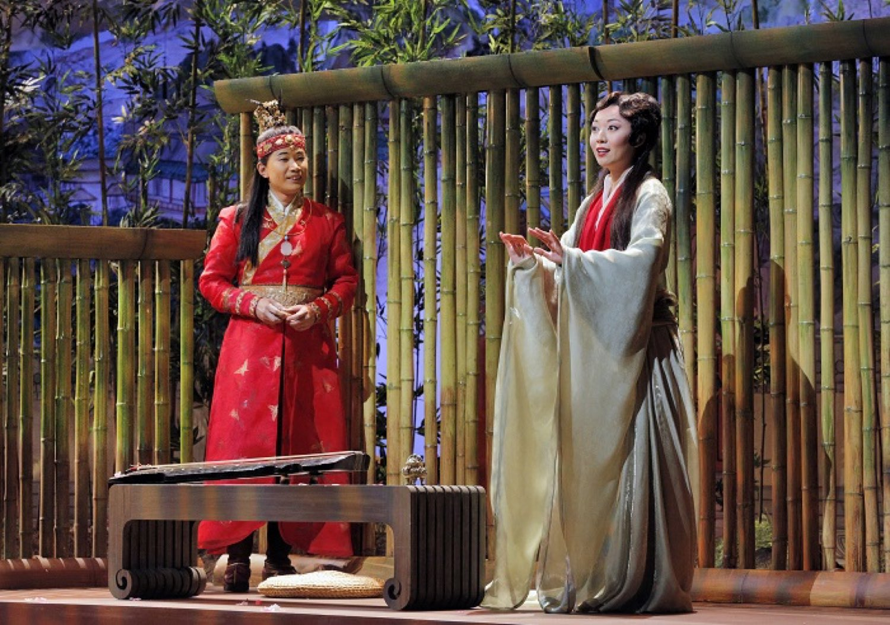
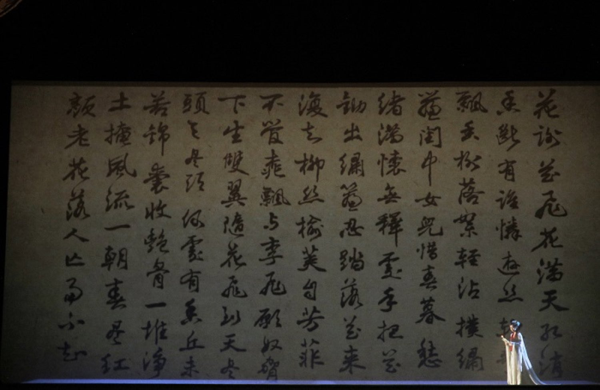

Beijing · Changsha · Wuhan
Commissioned by San Francisco Opera and premiered in 2016, Dream of the Red Chamber brought the Chinese classic to the Western stage as an English-language opera for the first time. Its creative team was entirely Chinese: directed by Stan Lai, composed by Bright Sheng, co-written with David Henry Hwang, and designed by Academy Award winner Tim Yip, whose sets and costumes have been described as the most lavish in the company's hundred-year history. In September 2017, the opera made its first tour of mainland China, playing at the Poly Theatre in Beijing, the Meixihu Grand Theatre in Changsha, and the Qintai Grand Theatre in Wuhan.






Hair & Make-up
As a member of the hair and make-up team, I was responsible for make-up, wig styling, and quick changes for the voices of the Stone and the Flower, the dancers, and the ladies-in-waiting. I also worked on wig preparation before the tour and on wig maintenance throughout it.
The opera tells of a Stone and a Flower, and of their past and present lives. Standing in the wings, I often felt that backstage was a workshop of dreams. The audience saw two hours of beauty. In the places the light never reached, every wig and every brushstroke was responsible for that dream. Here I learned that what matters most backstage is not speed, but calm and precision: every detail must survive the stage light, and every quick change must send the performer on stage with confidence.
A Story That Brought Me Backstage
It was my first production after graduating. It made me certain I wanted to work behind the scenes, and it showed me, for the first time, how a Chinese story could be told on the world's stage.
Dream of the Red Chamber © San Francisco Opera, photo by Cory Weaver